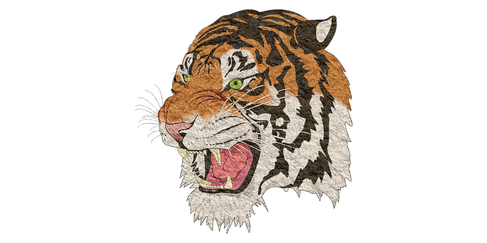

<main>
  <section class="presentation">
      <div class="introduccion">
          <div class="intro-text">
              <h1>Ilustraciones</h1>
              <p>Las Ilustraciones son uno de los tantos diseños en GetYourDesign.</p>
          </div>
          <div class="cta">
            <a href="#" class="btn-com">Explorar los diseños</a>
          </div>
      </div>
      <div class="cover">
          
          
          
      </div>
  </section>
  <div class="laptop-select">
    <i class="fa fa-chevron-left" aria-hidden="true" (click)="onSlide('back',false)"></i>
    <i class="fa fa-circle dot" aria-hidden="true" (click)="onSlide(1,true)" [ngClass]="{active : slide == 1}"></i>
    <i class="fa fa-circle dot" aria-hidden="true" (click)="onSlide(2,true)"></i>
    <i class="fa fa-circle dot" aria-hidden="true" (click)="onSlide(3,true)"></i>
    <i class="fa fa-chevron-right" aria-hidden="true" (click)="onSlide('next',false)"></i>
  </div>

  
  
  
</main>